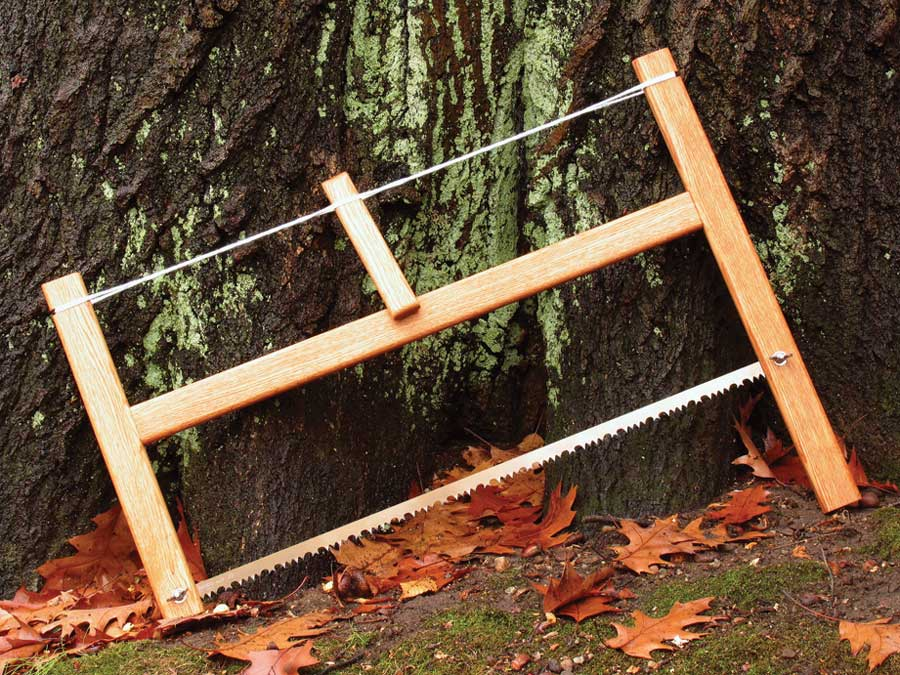

Diy Bucksaw
This easy-to-make handsaw will last for many generations.
By Raj Chaudhry
June/July 2009
For decades, my family has used a simple homemade bucksaw to cut green logs and brush. It’s been a workhorse and has proved superior to any store-bought saw we’ve owned. Its thin blade, stretched tight by a string-tensioning system, slices easily through the toughest timber. The saw’s square frame maximizes the effective cutting length of the blade, and its long handle permits two-handed sawing and helps prevent barked knuckles. And to top it off, the saw breaks down into a compact package that easily fits in a pack or car trunk.
Recently, I set out to build a second saw, using the original as my pattern. Like the prototype, the new saw has a frame of three-quarter-inch-thick red oak. Ash, hickory or any tough hardwood should work as well. The saw uses a cotton string - sold as a refill for chalk-line reels. This string is resistant to stretching and has proved strong enough to hold up over the years.
The saw features a 30-inch raker-tooth bow saw blade, available for about $5 at hardware stores. You can easily adjust the design to accommodate longer or shorter blades simply by changing the length of the crossbar. Click here to see a diagram of the bucksaw plans.
For decades, my family has relied on a simple homemade buck saw to cut green logs and brush. The saw’s thin blade, stretched tight by a twisted string, makes short work of the toughest timber. Its square frame allows you to use the full length of the blade. A long handle permits two-handed sawing and keeps one hand below the log, preventing barked knuckles. And to top it off, the saw breaks down into a compact package, which makes it convenient for trunk or pack.
Supplies for Making a Bucksaw
Wood Cut List | | | | | |
Part | No. Needed | Length | Width | Thickness | Material |
Crossbar | 1 | 28" | 1 3/4" | 3/4" | Red oak |
Long end | 1 | 22" | 1 3/4" | 3/4" | Red oak |
Short end | 1 | 16" | 1 3/4" | 3/4" | Red oak |
Tensioning stick | 1 | 7 1/2" | 1 1/4" | 3/4" | Red oak |
String, cotton chalk line or hemp cord, approximately 12 yards.
1/4"-20 stainless steel hardware: Two 1 1/2" long round-head machine screws, two wing nuts, four flat washers, two split lock washers.
One 30" raker-tooth-pattern bow saw blade, such as Bahco Model 23-30.
Sandpaper
Linseed oil- or tung oil-based penetrating wood finish
Beeswax or bowstring wax for string (optional).
DIY Bucksaw Instructions
Cut the parts to finished dimensions.
Make a channel for the string. The 1/4" wide, 1/4" deep slots are located along the outside face of each end piece, beginning 1 1/4" from the top. Cut a matching string slot in one face of the tensioning stick. With a rattail file or sandpaper, round the slots’ sharp corners.
Mark and cut slots for the buck saw blade using a coping saw or scroll saw. For the shorter of the two end pieces, make a straight cut, 1 3/8" deep, starting from the piece’s bottom face. The slot for the longer member is 1" long and begins 6 3/8" from the bottom. To start this slot, drill a hole - just big enough to thread a coping or scroll saw blade through - at one end.
Cut mortises in the ends for the crossbar. These recesses should measure 5/16" wide, 1 3/4" long and at least 3/4" deep. Each mortise should begin 6 1/2" from the top of its respective member. To make the mortise, bore a line of overlapping holes with a 5/16" drill bit, and then square up the recess with a chisel.
Cut tenons on each end of the crossbar, 5/16" wide by 3/4" long. I cut these on a table saw equipped with a dado blade.
Using a table-mounted router, or sandpaper, radius the edges of the frame and tensioning stick. I used a 1/4" roundover bit on all long edges except those at the junction of the crossbar and ends.
Mark and drill for the blade-mounting hardware. First, drill a 1/4" diameter hole, 3/4" from the inside face and 1" up from the bottom on the short end piece. Next, bore a corresponding hole in the long end piece. It should be 7 inches up from the bottom and approximately 3/4" from the inside face.
Lightly sand all the pieces, remove dust and apply finish.
Assemble the saw and mount the blade, using one machine screw, two flat washers, one lock washer and one wing nut per end.
Wrap about six loops of chalk-reel line around the top, within the notches. Tie off the end. I like to rub beeswax on the string, which I feel makes it last longer.
Insert the stick between loops and twist until tight. The tension will hold it against the crossbar. The saw is ready to go. Reduce the tension when you are done working.

RAJ CHAUDRHY
This easy-to-make bucksaw will give you years of wood-cutting service.
|
|
|